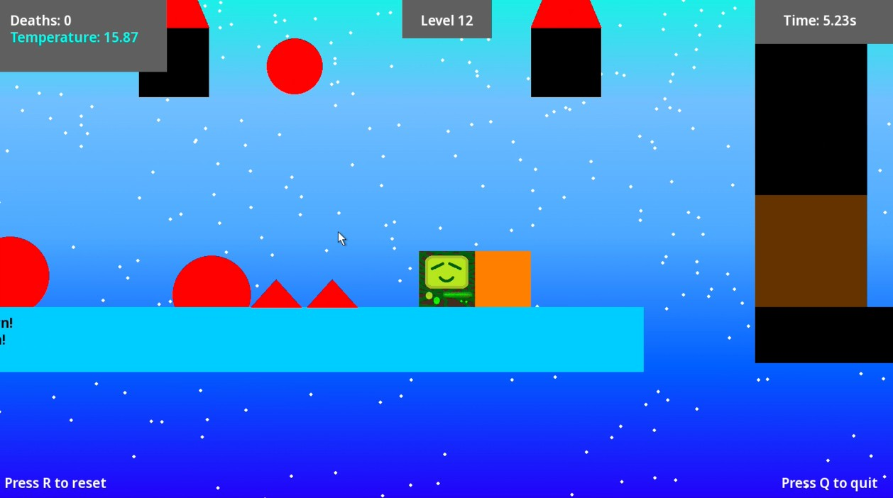

As of right now, there are only two worlds in the game. They are:
In this world, you start off simple... but slowly gain your way up, as you get familiar with the game!

When you get GOLD rank in all Green World Levels, you get a reward: A NEW CHARACTER!
In this world, your temperature really starts to matter... Because, you start heating up like crazy despite the cold surroundings. But don't worry, if you find an ice block nearby, you can just stand on it to cool down! But the biggest catch is... the ice block can melt, so also make sure to go on your path so that ice block doesn't just end up melting and leave you off to a dead end... Not to mention, if you cool down too much, you will end up freezing to death, or malfunction... whatever you would like to call it.
